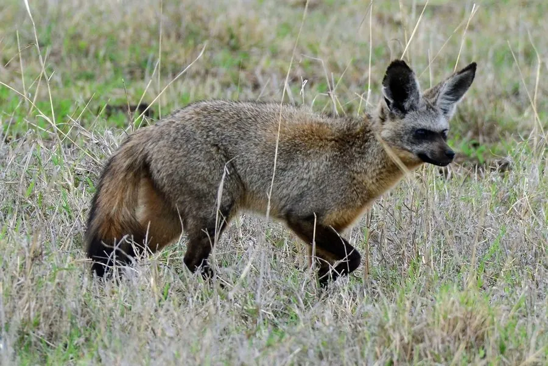

哺乳动物 · 动物界
大耳狐 Otocyon megalotis

非洲草原上的小型狐类，耳朵巨大用于散热和听声，主食白蚁，也吃昆虫和小型脊椎动物，多在夜间活动。
- 分类
- 门脊索动物门纲哺乳纲目食肉目科犬科属大耳狐属
- 栖息环境
- 非洲东部和南部的稀树草原、草地与半荒漠
- 地理分布
- 非洲东部和南部，从埃塞俄比亚、肯尼亚到南非
- 保护级别
- IUCN 无危（LC）
物种志
大耳狐体长 0.55–0.66 米，尾长 0.23–0.34 米，体重 3–5.5 kg。它最醒目的特征是巨大的耳朵，长可达 12–13 cm，耳内覆毛；被毛为黄褐至灰褐色，面部有黑色“面罩”斑纹，四肢和尾部颜色较深，牙齿较小而数量较多。
大耳狐分布于非洲东部和南部的稀树草原、草地和半荒漠，从埃塞俄比亚、肯尼亚到南非。它以白蚁为主食，也吃昆虫、蝎子、小型啮齿类、鸟类、卵和果实，听觉灵敏，能听到地下白蚁活动的声音。大耳狐多成对或结成小家庭群活动，多在夜间和晨昏觅食，白天在洞穴中休息；大耳还有助于散热。雌性妊娠期约 60–70 天，每胎 2–6 仔。大耳狐种群总体稳定，被列为无危。
形态与习性
- 食性白蚁为主，也吃昆虫、蝎子、小型啮齿类、鸟类、卵和果实
- 体长0.55–0.66 m，尾长 0.23–0.34 m
- 体重3–5.5 kg
- 寿命野外约 9–10 年
- 繁殖妊娠期约 60–70 天，每胎 2–6 仔
- 耳朵长约 12–13 cm，用于散热和听声
- 活动节律夜间和晨昏觅食
趣味知识
- 大耳狐的耳朵可达 12–13 厘米长，既能听声又能散热。
- 它的主食是白蚁，牙齿小而多，适应吃昆虫。
- 大耳狐成对或结成小家庭群活动，夜间外出觅食。
- 大耳狐的听觉很灵敏，能听到地下白蚁活动的声音。